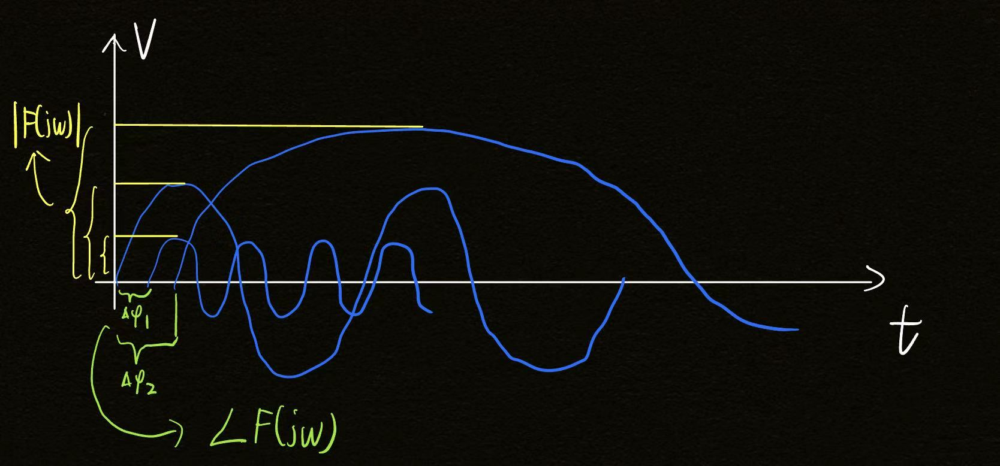

Based on the amazing video by 3Blue1Brown. Enter any function, and watch the Fourier winding machine in action!
Your input function f(t) plotted over the time range.
For each sampling frequency, the signal is "wound" around a circle. The red dot marks the center of mass.
Select a frequency and play the animation to see the curve drawn frame-by-frame. Red dot = real-time center of mass.
The x-coordinate of the center of mass for each frequency shows where energy is concentrated.
Understanding the Fourier transform from the physical perspective of the center of mass and of the signal superposed in a rotating polar coordinate system is essentially constructing a method that brings out the differences among the different frequency components of a signal.
Displayed on the complex plane, the geometric meaning of the Fourier transform intuitively reveals how the frequency components of a signal differ. The difference revealed here is the difference in spectral density $F(j\omega)$ (the spectral density will be covered in full later). $F(j\omega)$ may be a complex number:
Next, let's see how the Fourier transform is constructed.
First, recall the definition of the definite integral — essentially, a limit of a sum.
Over the time interval $0 \to T$, sample the signal every $\Delta t$, obtaining $N$ sample points $t_1, t_2, \dots, t_N$; each sample point corresponds to a sampled value $f(t_k)$.
Assume the total mass of the curve is $1$. Divide the curve into $N$ small segments, each of length $\Delta t$:
$$ \sum_{k=1}^{N} \frac{1}{N} f\left(t_{k}\right) e^{-j 2 \pi f t_{k}} $$How are the $N$ tiny segments of the curve chosen? At every step of $\Delta t$, the curve has wound to some position in the polar coordinate system — take the coordinates and the mass $1/N$ at that position to compute the center of mass. Do this for all $N$ steps of $\Delta t$.
And we have the relations:
$$ \begin{aligned} N \cdot \Delta t & = T \\ \frac{\Delta t}{T} & = \frac{1}{N} \end{aligned} $$Hence we also have:
$$ \begin{aligned} & \sum_{k=1}^{N} \frac{\Delta t}{T} f\left(t_{k}\right) e^{-j 2 \pi f t_{k}} \\ = & \sum_{k=1}^{N} \frac{\Delta t}{T} f\left(\frac{k \Delta t}{T}\right) e^{-j 2 \pi f \frac{k \Delta t}{T}} \\ = & \frac{1}{T} \sum_{k=1}^{N} f\left(\frac{k \Delta t}{T}\right) e^{-j 2 \pi f \frac{k \Delta t}{T}} \Delta t \end{aligned} $$Here, suppose the function $f(t)$ is bounded on $[0,T]$. Divide the interval $[0,T]$ into $n$ sub-intervals $[t_0,t_1],\ [t_1,t_2],\ \dots,\ [t_{n-1},t_n]$, where the sub-intervals all have the same length $\Delta t = t_1 - t_0,\ \Delta t = t_2 - t_1,\ \dots,\ \Delta t = t_n - t_{n-1}$. On each sub-interval $[t_{k-1},t_k]$ pick an arbitrary point $\xi_{k}$; here we take $\xi_{k} = \dfrac{k \Delta t}{T}$.
Form the product of the function value $f(\xi_k)$ and the sub-interval length $\Delta t$: $f(\xi_k)\,\Delta t\ (k=1,2,\dots,N)$, and form the sum:
$$ \sum_{k=1}^{N} f\left(\frac{k \Delta t}{T}\right) e^{-j 2 \pi f \frac{k \Delta t}{T}} \Delta t $$If the limit of this sum always exists as $\Delta t \to 0$, then multiplying back by the factor $T$ gives:
$$ \lim_{\Delta t \to 0} \frac{1}{T} \sum_{k=1}^{N} f\left(\frac{k \Delta t}{T}\right) e^{-j 2 \pi f \frac{k \Delta t}{T}} \Delta t \longrightarrow \frac{1}{T} \int_{0}^{T} f(t) e^{-j 2 \pi f t} \mathrm{d}t $$This is exactly the point at which we need to introduce the spectral density and the true Fourier transform.
The true Fourier transform scales up the center of mass: the longer the integration interval $[0,T]$, the larger the scaled center of mass, until the interval becomes $[0,\infty)$ and even $(-\infty,\infty)$. Multiplying by $T$ scales up the center-of-mass coordinates (dimensionally, this corresponds exactly to the spectral density, V/Hz).
This gives the true Fourier transform:
$$ F(j\omega) \stackrel{\mathrm{def}}{=} \int_{-\infty}^{\infty} f(t) e^{-j 2 \pi f t} \mathrm{d}t $$The coordinates of the center of mass on the complex plane correspond to the spectral density:
A figure makes this easier to understand:
